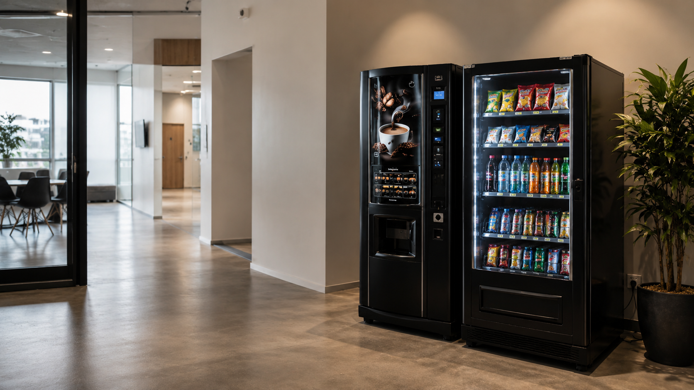

Prodej automatů
Automaty si u nás můžete prohlédnout a konzultovat naživo.

Prodáváme a servisujeme vendingové automaty na kávu, nápoje i občerstvení. Pomůžeme Vám vybrat vhodné řešení pro firmu, školu, provozovnu nebo veřejný prostor a zajistíme odborný servis i následnou péči.
PRODEJ A SERVIS
Na pobočce Vám představíme vendingové automaty značky Bianchi a další ověřená řešení pro kávu, nápoje i občerstvení. Pomůžeme Vám vybrat vhodný automat podle typu provozu, počtu zákazníků a požadovaného sortimentu.
Součástí nabídky je také servis, údržba a poradenství, aby automat dlouhodobě fungoval spolehlivě.

Automaty si u nás můžete prohlédnout a konzultovat naživo.
Pomůžeme vybrat vhodný typ automatu podle prostoru a provozu.
Zajišťujeme opravy, údržbu a technickou podporu.
Pomůžeme se zprovozněním a nastavením automatu.
SERVIS AUTOMATŮ
Provádíme servis a údržbu vendingových automatů. Pomůžeme s diagnostikou závad, pravidelnou kontrolou, čištěním, nastavením i opravami podle potřeby konkrétního zařízení.
Zjistíme příčinu problému a navrhneme vhodné řešení.
Pomáháme předcházet poruchám a prodloužit životnost zařízení.
Zkontrolujeme nastavení automatu a připravíme jej na další provoz.
Zajistíme potřebnou servisní péči podle typu automatu.
BIANCHI
V nabídce máme kávové vendingové automaty a snackové automaty značky Bianchi i další ověřené modely. Rádi poradíme s výběrem podle velikosti provozu, umístění a požadovaného sortimentu.
Automaty pro rychlou přípravu kávy ve firmě, škole, čekárně nebo provozovně.

Automaty na snacky, balené nápoje a rychlé občerstvení podle typu místa.
LOKÁLNÍ PROVOZ
SPOLUPRÁCE
Probereme typ prostoru, počet lidí, požadovaný sortiment a způsob využití automatu.
Navrhneme řešení podle provozu, rozpočtu a toho, zda potřebujete kávu, nápoje nebo občerstvení.
Pomůžeme s dodáním, umístěním a nastavením automatu pro běžný provoz.
Postaráme se o servis, údržbu a případné opravy. U vybraných lokálních provozů řešíme i doplňování.
VENDING DO PROVOZU
Pomůžeme Vám vybrat vhodný automat na kávu, nápoje nebo občerstvení. Zajistíme prodej, zprovoznění i následný servis.
U vybraných lokalit v Šumperku a okolí se můžeme domluvit také na pravidelném doplňování.